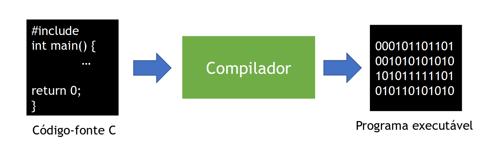
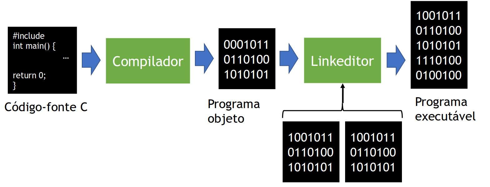
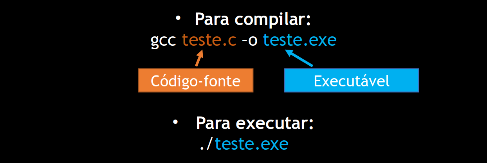
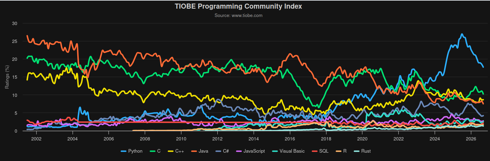
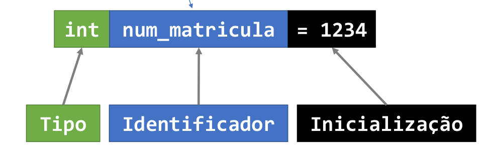

MCTA028-15 - PROGRAMAÇÃO ESTRUTURADA
UFABC
2026-09-15
\[ \def\argmin{\operatorname*{argmin}} \def\Regret{\operatorname*{Regret}} \def\PRegret{\operatorname*{P-Regret}} \def\WL{\operatorname*{WL}} % \def\T{\mathsf{T}} \def\prob{\mathbb{P}} \def\expect{\mathbb{E}} \def\ones{\mathbf{1}} \def\eps{\varepsilon} \def\ERM{\mathrm{ERM}} \def\DESC{\mathrm{DESC}} \def\VC{\mathrm{VC}} \def\LDim{\mathrm{LDim}} \def\bR{\mathbb{R}} \def\bN{\mathbb{N}} \def\cC{\mathcal{C}} \def\cD{\mathcal{D}} \def\cH{\mathcal{H}} \def\cB{\mathcal{B}} \def\cX{\mathcal{X}} \def\cY{\mathcal{Y}} \def\cV{\mathcal{V}} \]
Site da disciplina: https://victorvsp.github.io/pe_26/
Moodle:
PE-2026.3: Programação Estruturada (MCTA028-15) - Victor Sanches Portella
| Componente | Peso |
|---|---|
| Laboratórios | 15% |
| EP1 + EP2 | 15% |
| Prova 1 | 30% |
| Prova 2 | 40% |
Ideia principal
Média final: \[ M = 0.15 \cdot L + 0.15 \cdot \mathrm{EP} + 0.3 \cdot \mathrm{P1} + 0.4 \cdot \mathrm{P2} \]
Critério de Aprovação: \[M \geq 5 \quad \text{e} \quad M_P = \frac{0.3 \cdot \mathrm{P1} + 0.4 \cdot \mathrm{P2}}{0.7} \geq 5\]
As ferramentas de IA Generativa (em particular coding models/agents) está mudando a indústria (e pesquisa acadêmica) em computação de forma profunda.
Assim, surge a pergunta:
Ainda vale a pena aprender a programar?
Ainda vale a pena aprender a programar?
Minha resposta: Na minha opinião, por enquanto, sim
Como gosto de pensar sobre como usar os modelos de IA generativos:
É possível delegar o ato de “pensar”, mas não o de “entender”
Se produzir código ficou mais fácil, outras habilidades se tornam mais importantes:
especificar precisamente o que queremos;
ler, compreender, e depurar código;
testar e encontrar casos em que ele falha;
avaliar escolhas de algoritmos, estrutura de dados, e arquitetura;
modificar código sem introduzir novos erros.
Não sabemos como programação será ensinada daqui alguns anos.
Existem propostas recentes bastante radicais:
Ainda não sabemos se isso funciona bem para formar cientistas da computação e como a área vai evoluir no futuro.
Concretament, nessa disciplina o uso de IA é proibido (a não ser que explicitamente dito o contrário por mim em momentos específicos)
Uso de IA comprovado em laboratórios e EPs será considerado plágio.
Evite usar modelos de IA para tirar suas dúvidas de forma imediata
Provas serão fortemente baseadas em exercícios de laboratório e EPs. Então fazer esses exercícios sem IA já lhe prepara para a prova automaticamente.
Linux é uma família de sistemas operacionais de código aberto
Construídos em torno do Kernel Linux, criado por Linus Torvalds em 1991
Unix-like: segue a organização e as principais convenções dos sistemas Unix (arquivos hierárquico, permissões, shells, etc.)
Uma distribuição Linux é um sistema operacional completo
Inclui kernel, utilitários, bibliotecas e aplicativos
Exemplos: Ubuntu, Fedora, Debian, Arch Linux, etc.
Aulas e laboratórios serão realizados em ambiente Linux. Detalhes para outros sistemas operacionais não devem ser difíceis de encontrar.
/ ├─ bin # programas essenciais do sistema ├─ boot # arquivos do boot loader ├─ dev # dispositivos do sistema ├─ etc # arquivos de configuração do sistema ├─ home # pastas dos usuários │ ├─ user1 │ └─ user2 ├─ usr # utilidades dos usuários │ ├─ bin # programas do usuário │ │ ├─ gcc │ │ └─ firefox │ ├─ share # arquivos compartilhados │ │ ├─ doc │ │ ├─ fonts │ │ ├─ themes │ │ └─ vim │ └─ local │ ├─ bin │ └─ share └─ ...
O sistema de arquivos Linux é organizado em diretórios e arquivos
/ (root)/ ├─ home │ └─ user1 └─ prog_estruturada └─ slides.pdf
Caminho: /home/user1/prog_estruturada/slides.pdf
Cada diretório (e arquivo) pode ser endereçado listando o caminho de diretórios relativo a pasta atual
. (ponto).. (dois pontos)~ (til)Exemplo se o diretório atual é /home/user1:
prog_estruturada/slides.pdf é o caminho relativo../user2/arquivo.txt é o caminho relativo para um arquivo em outro diretórioEm sistemas Unix-like, é muito comum interagir com o sistema por meio de uma interface de linha de comando (command-line interface ou CLI).
O terminal é o ambiente no qual digitamos comandos e vemos sua saída.
O programa que interpreta esses comandos é chamado de shell.
No Linux, um dos shells mais comuns é o Bash
A linha de comando é especialmente conveniente para programadores e administradores de sistemas (e agentes de IA).
A sintaxe da linha de commando frequentemente é
Alguns comandos básicos:
cd [bla]: muda o diretório atual para aquele em blapwd: exibe o caminho do diretório atualls [FLAGS] [bla]: lista os arquivos em bla (diretório atual se vazio)
-l exibe detalhes sobre os arquivos-a exibe mesmo arquivos ocultos (aqueles com nome começando com .. Exemplo: .segredos.txt)cat [bla]: Imprime o conteúdo do arquivo em pathmkdir [nome]: cria um novo diretório com o nome especificadorm [FLAGS] [bla]: remove bla
-r remove diretórios e seus sub-arquvios/diretórios recursivamente-f ignora arquivos não existentes e perguntas de permissãocp [FLAGS] [origem] [destino]: copia um arquivo de uma localização para outra
-r copia diretórios e sub-arquivos recursivamentemv [origem] [destino]: move ou renomeia um arquivo/diretórioO shell permite usar caracteres coringa (wildcards) para representar vários nomes de arquivos.
O mais comum é *, que representa uma sequência qualquer de caracteres.
Normalmente, a saída de um programa aparece no terminal.
Com >, podemos redirecionar essa saída para um arquivo.
Para executar ls e redirecionar o resultado no arquivo saida.txt:
Caso queira adicionar o resultado ao final de saida.txt, use:
Algumas dicas do terminal
Ctrl+C para interromper um comando em execuçãoman <comando> para ver o manual do comando. Exemplo: man ls--help para exibir ajuda rápidaTab para completar nomes de arquivos e diretóriosCtrl+R para buscar comandos anteriores no históricoUm algoritmo é uma sequência de etapas bem definidas para realizar uma tarefa.
Exemplos:
A CPU (Central Processing Unit) executa sequências de instruções.
Cada CPU possui um conjunto finito de instruções que varia com a arquitetura (x86, ARM, etc.)
Conhecido como linguagem de máquina
Podemos descrever algoritmos em linguagm de máquina, gerando um programa.
Uma linguagem de programação é uma linguagem com regras precisas usada para descrever operações que um computador pode exercutar.
Inicialmente, existia somente as intruções da CPU
Programas simples já são complexos de se descrever com tais intruções.
Linguagens de alto nível: Linguagens mais expressivas, com maiores abstrações servindo como intermediárias entre o programador e a linguagem de máquina.
Modos como as linguagens de programação são executadas:
Essa distinção pode ser mais sutil por uso de máquinas virtuais e compilação just-in-time, por exemplo. C é um exemplo clássico de linguagem normalmente compilada para código nativo.
Linguagens também podem ser classificadas por paradigma.
Compilar é traduzir um programa de uma linguagem para outra.

Existe diversos compiladores de C: gcc, clang, etc.
Programas executáveis são específicos da plataforma (sistema operacional, arquitetura, etc.)
É possível compilar um programa a partir de diversos arquivos-fonte
Cada arquivo fonte gera um arquivos-objeto (executáveis com partes faltando)
Arquivos-objeto são ligados (linked) gerando o executável final.


gccFlags recomendadas:
-Wall: dá mais warnings de compilação (muito recomendado)-Wextra: dá warnings adicionais de compilação-Wpedantic: avisa sobre construções fora do padrão ISO C escolhidoFlags adicionais úteis:
-Werror: warnings viram erros de compilação-g: permite usar gdb e valgrind (mas deixa programa mais pesado)-lm: permite usar funções matemáticasExemplo de compilação recomendada:
gcc -Wall -Wextra -Wpedantic programa.c -o programa| Ferramenta | Para que serve |
|---|---|
| Editor de texto | Ferramente para escrever e editar arquivos, incluindo código. |
| Compilador | Traduz o código C para um programa executável |
| IDE (Integrated Development Environment) | Ambiente com editor, pode chamar compilador, depurador, auto-complete, etc. |
Exemplos de editores: Gedit, vim, Emacs.
Exemplos de IDEs: VSCode, Code::Blocks, PyCharm.
Evitem uso de auto-completes avançados, principalmente no começo.
A linguagem C foi criada por Dennis Ritchie no início dos anos 1970.
Alguns marcos/padrões importantes:
C continua importante porque aparece em contextos como, sistemas operacionais, compiladores, sistemas embarcado, etc.
Além disso, C nos força a entender conceitos que outras linguagens escondem parcialmente, como:

Em C, um bloco é delimitado por { e }
Blocos não precisam ser identados como em Python, mas é boa prática
A maioria das linhas em C terminam com ; (blocos são a exceção)
Esse programa não imprime nada, mas é um programa C válido.
A função main é o que vai ser executado quando o programa é iniciado.
O return 0; indica, por convenção, que o programa terminou com sucesso.
Valores diferentes indicam diferentes tipos de erro
| Tipo | Tamanho típico | Faixa típica |
|---|---|---|
char |
1 byte | -128 a 127 |
short int |
2 bytes | \(-2^{15}\) a \(2^{15}-1\) |
int |
4 bytes | \(-2^{31}\) a \(2^{31}-1\) |
long int |
8 bytes | \(-2^{63}\) a \(2^{63}-1\) |
long long int |
8 bytes | \(-2^{63}\) a \(2^{63}-1\) |
float |
4 bytes | ~7 casas de precisão |
double |
8 bytes | ~15–16 casas precisão |
Tamanhos/faixas exatapas dependem do compilador/sistema. Valores acima são típicos para gcc em sistemas Linux de 64 bits.
Não precisamos usar um tipo booleano no começo do curso. Em C, historicamente:
0 representa falso;0 representam verdadeiro.Existe _Bool/bool via <stdbool.h>, mas podemos introduzir isso apenas se for conveniente.

C é case-sensitive.
Os nomes num_matricula e Num_matricula são diferentes.
Use nomes representativos. Evite nomes como tmp1, tmp2, aux50, exceto em situações muito locais e claras.
| Expressão | Operação |
|---|---|
a + b |
soma |
a - b |
subtração |
a * b |
multiplicação |
a / b |
divisão |
a % b |
resto da divisão |
Em C, usamos funções de uma biblioteca para entrada e saída.
As funções mais básicas ficam em stdio.h.
Durante o curso, praticamente todos os programas usarão essa biblioteca.
printfA função printf imprime texto formatado.
A string format descreve como imprimir os valores.
printf#include <stdio.h>
int main() {
int num = 512;
int a = 6, b = 7;
printf("Hello World");
printf("%d", num);
printf("%d\n", num);
printf("A sala do professor eh a %d\n", num);
printf("%d * %d = %d\n", a, b, a * b);
return 0;
}O printf recebe um argumento extra para cada %bla que tem na String de formatação
| Especificador | Tipo |
|---|---|
%d |
int |
%ld |
long int |
%lld |
long long int |
%f |
float/double em printf |
%lf |
double em scanf |
%c |
char |
%s |
string |
Faça as seguintes operações:
lab1 em seu diretório home com subdiretório programas e backup.programas, crie um programa ola.c em C que escreva “Olá mundo!”. Compile esse programa com as flags -Wall -Wextra -Wpedantic usando o gcc e execute o programa.ola.c chamada ola_bkp.c dentro de backupminha_home.txt em lab1/ com a lista de arquvios e diretórios na sua homeprogramas e todos os seus sub-arquivosUsando os erros de compilação como guia, faça o seguinte programa compilar e funcionar como esperado: